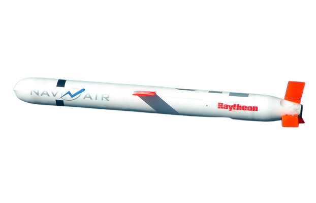
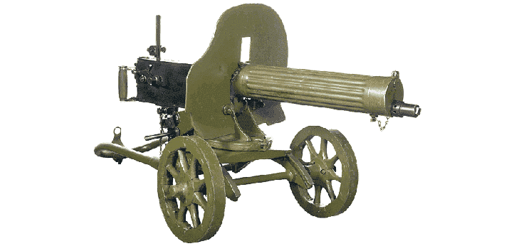
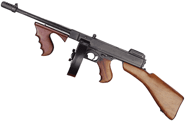
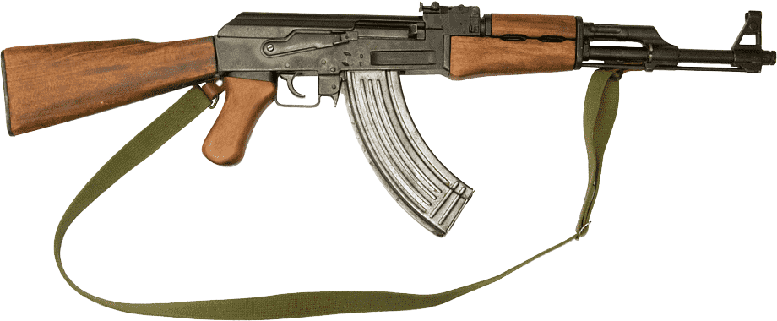
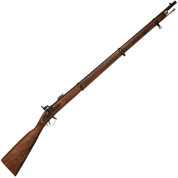
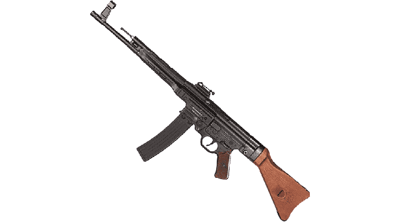
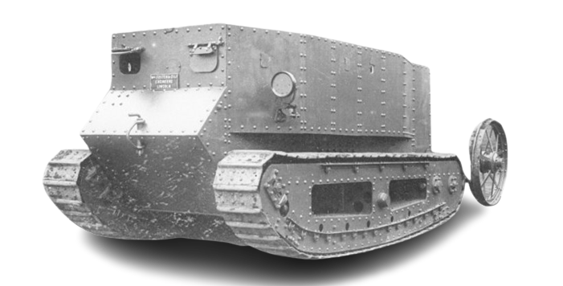
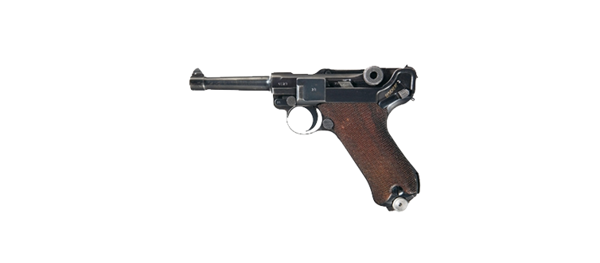
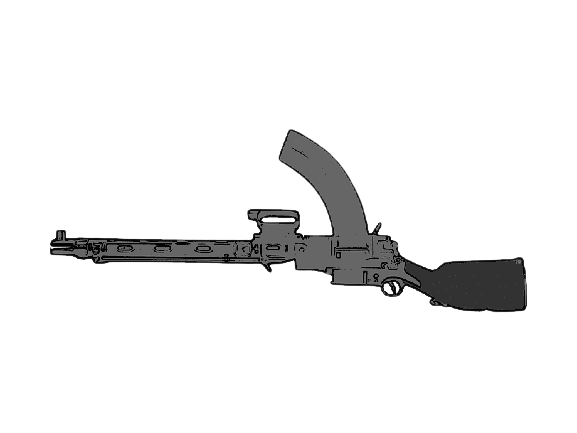
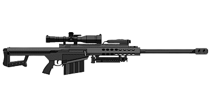

| Numero |
Nome |
Valor |
Ilustração |
Video |
| 0001 |
Missel tomahawk
- Shoppe
- AliExpress
- Amazon
Esses mísseis surgiram durante a Guerra do Golfo (1991) e contêm 450 quilos de explosivos.
Eles voam a quase 900 quilômetros por hora e têm um alcance em torno de 2.000 quilômetros, com a capacidade de mudar de altura durante a trajetória.
São disparados na vertical, a partir de navios militares.
Informação completa aqui.
|
US$ 1.000.000 |
 |
|
| 0002 |
MG 08
- Mercado Livre
- OLX
- AliExpress
A Maschinengewehr 08 , ou MG 08 , foi a metralhadora padrão do Exército Alemão na Primeira Guerra Mundial e é uma adaptação da arma Maxim original de 1884 de Hiram S. Maxim .
Foi produzido em várias variantes durante a guerra.
O MG 08 serviu durante a Segunda Guerra Mundial como uma metralhadora pesada em muitas divisões de infantaria alemã,
embora no final da guerra tivesse sido rebaixado a unidades de fortaleza de segunda classe.
Informação completa aqui.
|
US$ 999,32 |
 |
|
| 0003 |
M1 Thompson
- ZOOM
- Shoppe
- AliExpress
A Thompson foi amplamente adotada pelos militares dos Estados Unidos durante a Segunda Guerra Mundial e foi amplamente utilizada pelas Forças Aliadas durante a guerra.
Foi designado como M1928A1, M1 e M1A1 durante este tempo.
Mais de 1,5 milhão de metralhadoras Thompson militares foram produzidas durante a Segunda Guerra Mundial.
Informação completa aqui.
|
US$225,00 para US$44,00 |
 |
|
| 0004 |
AK-47
- Mercado Livre
- Shoppe
- Warzone Brazil
O trabalho de design na AK-47 começou em 1945.
Em 1946, o AK-47 foi apresentado para testes militares oficiais e, em 1948, a versão de estoque fixo foi introduzida no serviço ativo com unidades selecionadas do Exército Soviético.
Um dos primeiros desenvolvimentos do design foi o AKS (S-Skladnoy ou "dobrável"), que foi equipado com um estoque de metal de subcobertura.
No início de 1949, o AK-47 foi oficialmente aceito pelas Forças Armadas Soviéticas e usado pela maioria dos Estados membros do Pacto de Varsóvia.
Informação completa aqui.
|
US$4.227,12 |
 |
|
| 0005 |
Peabody–Martini–Henry M1874
- Shoppe
- AliExpress
- Magazine Luiza
O Martini-Henry é um fuzil por retrocarga, acionado por alavanca, de tiro único, que foi usado pelo Exército Britânico.
Ele entrou em serviço pela primeira vez em 1871, eventualmente substituindo o Snider-Enfield, um fuzil por antecarga convertido para o sistema de cartucho.
Variantes do Martini-Henry foram usadas em todo o Império Britânico por 47 anos.
Combinou a "ação de bloco cadente" desenvolvida inicialmente por Henry O. Peabody (em seu "Peabody rifle") e aprimorada pelo designer suíço Friedrich von Martini, combinada com o estriamento poligonal projetado pelo escocês Alexander Henry.
Informação completa aqui.
|
US$1.495,00 |
 |
|
| 0006 |
StG 44
- Shopee
- OLX
- Mercado Livre
O StG 44 (abreviação de Sturmgewehr 44, "fuzil de assalto 44") foi a primeira arma explicitamente chamada de fuzil de assalto.
Entrou em serviço no Exército Alemão durante a Segunda Guerra Mundial.
Inicialmente, a arma era classificada como pistola-metralhadora (machinenpistole), recebendo a denominação MP44.
As suas versões anteriores receberam as denominações MP 43/1, MP 43 e MKb 42(H).
Informação completa aqui.
|
US$16.907,96 |
 |
|
| 0007 |
Little Willie
- Americanas
- OLX
- AliExpress
Little Willie foi o primeiro tanque de trabalho do mundo.
Provou que um veículo com proteção blindada, motor de combustão interna e trilhos
era uma possibilidade para o campo de batalha.
Informação completa aqui.
|
Não possui preço, está em exposição no O Museu do Tanque. |
 |
|
| 0008 |
Luger P08
- Magazine Luiza
- OLX
- Shoppe
A pistola Luger P08 é uma antiga pistola semiautomática fabricada na Alemanha, entre os anos de 1900 e 1941.
Foi considerada como o maior souvenir da Segunda Guerra Mundial.
Esta pistola foi adotada pelo exército alemão em 1908, razão do nome P08. Dois milhões de unidades foram fabricadas entre 1914 e 1918, período da Primeira Guerra Mundial.
Informação completa aqui.
|
US$1.410,72 |
 |
|
| 0009 |
Madsen (metralhadora)
- Mercado Livre
- Americanas
- Shoppe
A Madsen foi uma metralhadora leve desenvolvida em 1902, pelo Capitão Madsen da artilharia do Exército da Dinamarca.
Sendo uma das primeiras metralhadoras leves produzidas em grande quantidade, a sua ação era única e requeria uma maquinação cuidada durante a sua fabricação.
O seu funcionamento baseava-se no sistema de recuo longo do cano.
Informação completa aqui.
|
Não possui preço. |
 |
|
| 0010 |
Barrett M82
- Magazine Luiza
- Mercado Livre
- OLX
Barrett M82 é um fuzil de precisão anti-material semiautomático que dispara um projétil de grosso calibre .50 BMG, com 12,7 mm de diâmetro .
Foi desenvolvido pela Barrett Firearms Manufacturing a pedido do Exército Norte-Americano, que desejava um fuzil preciso e com alto poder de destruição, para cumprir o papel de arma antimaterial (ou seja, projetada não só para deter combatentes humanos, mas também para causar danos materiais, sejam em construções, veículos leves, carros de combate, veículos blindados, eventualmente aeronaves etc.)
considerada uma das armas de fogo mais destruidoras da atualidade. É capaz de disparar efetivamente a 1,8Km do alvo (sendo o máximo 6.812,3 m).
Informação completa aqui.
|
US$481,05 |
 |
|